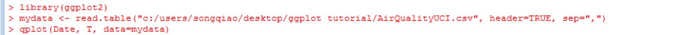
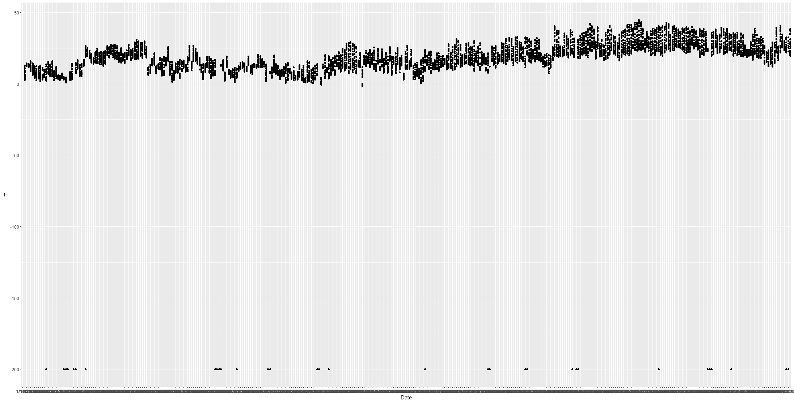
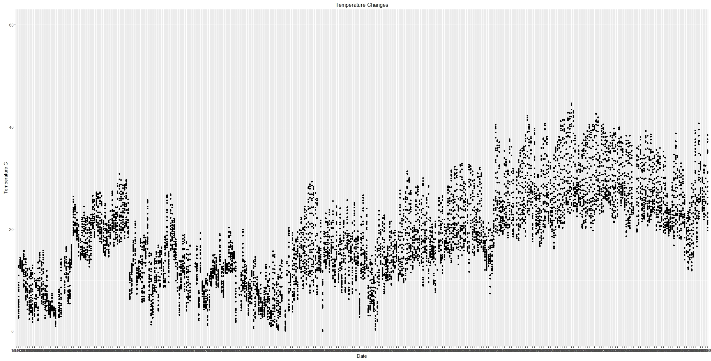

Tutorial 1
qplot
In this tutorial, you will get try out the basic qplot() function of ggplot2.
Step 1) After installing the ggplot2 package, you have to load and attach the package in r: library(ggplot2)
Step 2) Then you can load the data with the read.table(file, header=TRUE, sep=",") function. The first argument is the address of the file. The second argument header is a logical value indicating whether the file contains the names of the variables as its first line. The third argument sep is the field sperator character.
Step 3) Now we can create the plot using qplot. Inside qplot(x, y, data=z), the first attribute is the x coordinate, and second is the y coordinate and the "data =" is the data frame.


And we have our first plot created with ggplot2! Now let's see if we can improve it.
Step 4) We can change the y axis limits by adding scale_y_continuous(limits=c(min,max)) function
Step 5) Finally, we can edit the title, x axis label and y axis label by adding labs(title="", x="", y="") .
